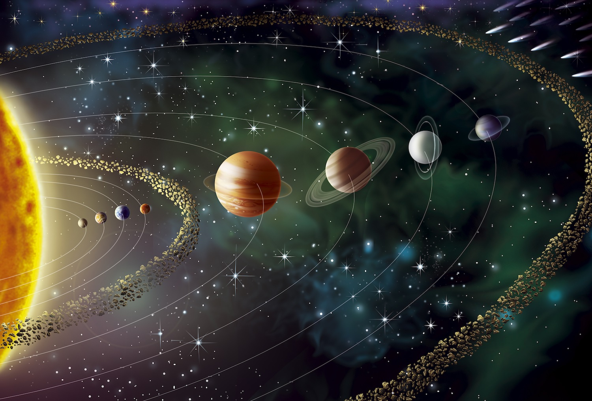

Tipuri de reactii
Reactiile de combinare, descompunere, substitutie, schimb si redox — cu exemple si ecuatii chimice.
Chimia este stiinta care studiaza substantele — compozitia, structura, proprietatile si transformarile lor. Reactiile chimice sunt procesele prin care substantele se transforma unele in altele, formand combinatii noi cu proprietati diferite.
De la arderea unei lumanari pana la fotosinteza din frunze, intreaga lume care ne inconjoara este guvernata de reactii chimice. Acest proiect exploreaza tipurile principale de reactii, elementele si compusii implicati, precum si curiozitati fascinante din lumea moleculelor.

| Rol | Nume |
|---|---|
| Profesor coordonator | Acatrinei-Vasiliu Cristinel-Petrică |
| Elev | Moroșanu Marius-Gabriel |
Reactiile de combinare, descompunere, substitutie, schimb si redox — cu exemple si ecuatii chimice.
Diferenta dintre elemente, compusi si amestecuri, plus exemple din tabelul periodic.
Fapte surprinzatoare despre molecule, reactii spectaculoase si chimia din viata de zi cu zi.
Chimia este la baza medicamentelor, materialelor noi, alimentelor si energiei pe care le folosim in fiecare zi. Intelegerea reactiilor chimice ne ajuta sa explicam lumea inconjuratoare, sa rezolvam probleme de mediu si sa construim tehnologii pentru viitor.